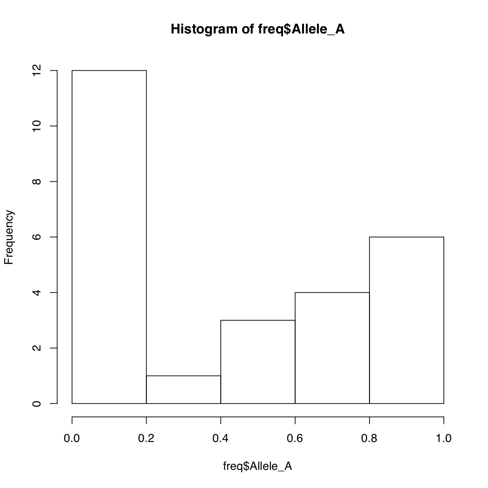
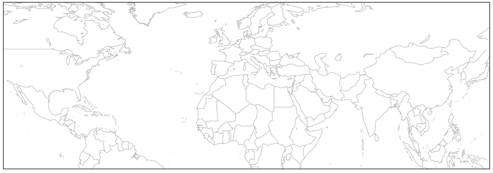
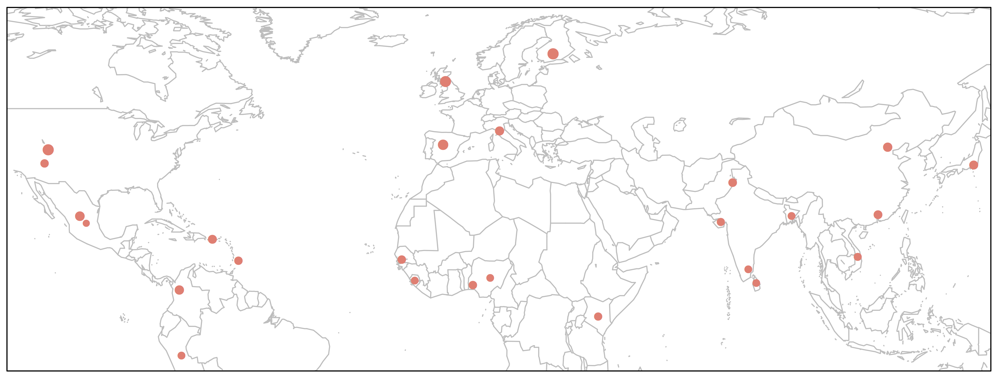

February 24, 2021
We have talked about data frames, which can be loosely regarded as spreadsheets with rows and columns of data. However, they are different from spreadsheet in a decidedly central way. A typical spreadsheet file e.g. .xls and its variations are binary - that is files that can only be opened through specific programs. Try opening a spreadsheet in a text editor and it will fail spectacularly.
The data frames in R are almost always plain, flat text files with no binary encoding associated with them. So they can be opened in a variety of other programs.
In the following section, we will practice importing data stored in flat text files into R. The cells in these files are delimited using a specific character.
.txt are tab or space delimited.csv are comma delimitedR provides specific functions to read these files:
read.table() for tab/space delimited filesread.csv() for comma separated onesIn the last section, you wrote a file called pops20.txt to the disk (hard drive on your computer). We can try reading that file back in. Make sure to start a new session in Rstudio before going any further.
The header=TRUE argument ensures that the first row of the data frame is appropriately read as the column headers/names. Otherwise it will be treated as data.
To check the first few and last few lines of this imported file, run these commands:
head(pops20)
pop1 pop2 pop3 pop4 pop5 pop6 pop7 pop8 pop9 pop10 pop11 pop12 pop13 pop14 pop15 pop16 pop17 pop18 pop19 pop20
[1,] "mut" "wt" "mut" "mut" "wt" "mut" "mut" "wt" "wt" "mut" "wt" "wt" "mut" "wt" "wt" "mut" "mut" "wt" "mut" "wt"
[2,] "mut" "mut" "mut" "wt" "mut" "mut" "wt" "mut" "wt" "mut" "mut" "mut" "mut" "mut" "mut" "wt" "mut" "wt" "mut" "mut"
[3,] "wt" "wt" "mut" "wt" "wt" "mut" "wt" "mut" "wt" "wt" "wt" "mut" "wt" "wt" "wt" "wt" "mut" "mut" "wt" "wt"
[4,] "wt" "wt" "mut" "mut" "mut" "mut" "mut" "wt" "wt" "wt" "wt" "mut" "wt" "wt" "mut" "mut" "wt" "wt" "wt" "mut"
[5,] "mut" "wt" "wt" "wt" "wt" "wt" "mut" "mut" "mut" "wt" "mut" "wt" "wt" "wt" "mut" "mut" "mut" "mut" "wt" "mut"
[6,] "mut" "mut" "mut" "mut" "mut" "mut" "wt" "wt" "mut" "mut" "wt" "mut" "mut" "wt" "mut" "wt" "mut" "mut" "mut" "mut"
tail(pops20)
pop1 pop2 pop3 pop4 pop5 pop6 pop7 pop8 pop9 pop10 pop11 pop12 pop13 pop14 pop15 pop16 pop17 pop18 pop19 pop20
[95,] "mut" "wt" "wt" "mut" "mut" "mut" "mut" "mut" "mut" "wt" "mut" "mut" "mut" "wt" "mut" "wt" "mut" "mut" "wt" "mut"
[96,] "wt" "wt" "mut" "mut" "wt" "mut" "mut" "wt" "mut" "wt" "wt" "wt" "mut" "wt" "mut" "wt" "mut" "wt" "mut" "mut"
[97,] "mut" "mut" "wt" "mut" "mut" "wt" "wt" "mut" "wt" "mut" "mut" "wt" "mut" "wt" "mut" "mut" "wt" "wt" "mut" "wt"
[98,] "mut" "mut" "mut" "mut" "mut" "mut" "mut" "mut" "wt" "wt" "mut" "mut" "mut" "mut" "mut" "mut" "mut" "wt" "mut" "mut"
[99,] "wt" "mut" "wt" "wt" "wt" "mut" "mut" "wt" "mut" "mut" "mut" "wt" "mut" "wt" "mut" "wt" "wt" "wt" "wt" "wt"
[100,] "mut" "mut" "wt" "wt" "wt" "mut" "wt" "mut" "mut" "wt" "wt" "wt" "wt" "wt" "mut" "wt" "wt" "mut" "mut" "mut"We will now tackle a small data set of allele frequency variation among 26 global human populations in an SNP named rs1426654 located on chromosome 15. The gene, SLC24A5 in which this SNP is located is involved in the regulation of skin pigmentation. In the following section, we will perform a range of analytical and graphical operations to understand this data better.
freq.df Allele Frequency Data
getwd()
[1] "/Users/vikram/Dropbox/r4grads/mod2/data"
options(width=150)
freq <- read.table('freq.df', header=T)
head(freq)
pop dist superpop lat long popname CHROM POS N_ALLELES N_CHR Allele_A Allele_G
1 ACB 13.19 AFR 13.1776 -59.5412 African_Carib_BBDS 15 48426484 2 192 0.1041670 0.895833
2 ASW -8.78 AFR 36.1070 -112.1130 African_Ancestry_SW_USA 15 48426484 2 122 0.1885250 0.811475
3 BEB 23.68 SAS 23.6850 90.3563 Bengali_in_Bangladesh 15 48426484 2 172 0.5348840 0.465116
4 CDX 22.01 EAS 22.0088 -100.7971 Chinese_Dai 15 48426484 2 186 0.0000000 1.000000
5 CEU 62.28 EUR 39.3210 -111.0937 Utah_Resid_from_NWEurope 15 48426484 2 198 1.0000000 0.000000
6 CHB 23.13 EAS 39.9042 116.4074 Han_Chinese 15 48426484 2 206 0.0291262 0.970874
tail(freq)
pop dist superpop lat long popname CHROM POS N_ALLELES N_CHR Allele_A Allele_G
21 PEL -9.19 AMR -9.1900 -75.0152 Peruvian 15 48426484 2 170 0.2823530 0.7176470
22 PJL 31.55 SAS 31.5546 74.3572 Punjabi_Lahore 15 48426484 2 192 0.7812500 0.2187500
23 PUR 18.22 AMR 18.2208 -66.5901 Puerto_Rican 15 48426484 2 208 0.7692310 0.2307690
24 STU 7.87 SAS 7.8731 80.7718 Sri_Lankan_Tamil 15 48426484 2 204 0.4852940 0.5147060
25 TSI 43.77 EUR 43.7711 11.2486 Toscani_Italy 15 48426484 2 214 0.9953270 0.0046729
26 YRI 10.16 AFR 7.3775 3.9470 Yoruba_Ibadan_Nigeria 15 48426484 2 216 0.0138889 0.9861110Notice that R formats the data so that’s all columns are properly spaced making it easy to read. First checked our current location in the directory tree. Then we set the display width to 150 characters. Finally we imported our data and stored it into the variable freq. Now try the following functions:
> names(freq)
[1] "pop" "dist" "superpop" "lat" "long" "popname" "CHROM" "POS" "N_ALLELES" "N_CHR" "Allele_A" "Allele_G"
> dim(freq)
[1] 26 12The above two commands tell you the names of columns and the dimensions of the data frame. Do the dimensions match your expectations? This can be a sanity check for the files you read in. If something is off, you will be able to notice it here.
R keeps track of the order of each row and column in data frame by assigning them coordinates. Thus you can access specific rows and columns of the data frames very quickly and easily. See the following example:
> freq[1:5,]
pop dist superpop lat long popname CHROM POS N_ALLELES N_CHR Allele_A Allele_G
1 ACB 13.19 AFR 13.1776 -59.5412 African_Carib_BBDS 15 48426484 2 192 0.104167 0.895833
2 ASW -8.78 AFR 36.1070 -112.1130 African_Ancestry_SW_USA 15 48426484 2 122 0.188525 0.811475
3 BEB 23.68 SAS 23.6850 90.3563 Bengali_in_Bangladesh 15 48426484 2 172 0.534884 0.465116
4 CDX 22.01 EAS 22.0088 -100.7971 Chinese_Dai 15 48426484 2 186 0.000000 1.000000
5 CEU 62.28 EUR 39.3210 -111.0937 Utah_Resid_from_NWEurope 15 48426484 2 198 1.000000 0.000000
> freq[,1:5]
pop dist superpop lat long
1 ACB 13.19 AFR 13.1776 -59.5412
2 ASW -8.78 AFR 36.1070 -112.1130
3 BEB 23.68 SAS 23.6850 90.3563
4 CDX 22.01 EAS 22.0088 -100.7971
5 CEU 62.28 EUR 39.3210 -111.0937
6 CHB 23.13 EAS 39.9042 116.4074
7 CHS 24.48 EAS 23.9790 113.7633
8 CLM 6.24 AMR 6.2442 -75.5812
9 ESN 10.22 AFR 9.0820 8.6753
10 FIN 61.92 EUR 61.9241 25.7482
11 GBR 56.49 EUR 55.3781 -3.4360
12 GIH 22.26 SAS 22.2587 71.1924
13 GWD 13.44 AFR 13.4432 -15.3101
14 IBS 40.46 EUR 40.4830 -4.0876
15 ITU 11.13 SAS 11.1271 78.6569
16 JPT 35.69 EAS 35.6895 139.6917
17 KHV 14.06 EAS 14.0583 108.2772
18 LWK -0.02 AFR -0.0236 37.9062
19 MSL 8.46 AFR 8.4606 -11.7799
20 MXL 23.63 AMR 23.6345 -102.5528
21 PEL -9.19 AMR -9.1900 -75.0152
22 PJL 31.55 SAS 31.5546 74.3572
23 PUR 18.22 AMR 18.2208 -66.5901
24 STU 7.87 SAS 7.8731 80.7718
25 TSI 43.77 EUR 43.7711 11.2486
26 YRI 10.16 AFR 7.3775 3.9470
> freq[1:5,1:5]
pop dist superpop lat long
1 ACB 13.19 AFR 13.1776 -59.5412
2 ASW -8.78 AFR 36.1070 -112.1130
3 BEB 23.68 SAS 23.6850 90.3563
4 CDX 22.01 EAS 22.0088 -100.7971
5 CEU 62.28 EUR 39.3210 -111.0937
As these examples show, you can access specific columns and rows in a data frame. In the first example, we asked R to print rows 1 through 5 to the screen. We indicated rows by printing a comma at the end of our argument. Likewise, columns can be specified by prefixing a comma to the argument. In the last example, we limited the output to the first 5 rows and 5 columns by providing both arguments separated by a comma. Try out more examples on your own.
Suppose you want to calculate basic summary statistics on columns with numerical data. In our data frame, we have three numerical columns: (1) Population location latitudes, (2) Frequency of Allele A and (3) Frequency of Allele G. Let’s work on these columns. While doing so, let’s learn another way to access columns in R, by using their names.
> range(freq$lat)
[1] -9.1900 61.9241
> range(freq$long)
[1] -112.1130 139.6917
> summary(freq$Allele_A)
Min. 1st Qu. Median Mean 3rd Qu. Max.
0.00000 0.04065 0.38382 0.43479 0.77825 1.00000
> summary(freq$N_CHR)
Min. 1st Qu. Median Mean 3rd Qu. Max.
122.0 186.5 198.0 192.6 207.5 226.0 We tested two R functions above. First function range shows the upper and lower limits of the data. In other words, it reports the minimum and maximum values. Thus, by looking at the output you can tell that our data comes from human populations that range 70 degrees in latitudinal distribution.
Second function, summary() shows basic statistics for the data - in this case, frequency of allele A. It shows mean, median, and the quantile distribution of the values. Notice that frequency of the allele varies a lot. It goes from 0 all the way to 1.
As you can see these simple functions are quite handy to get some basic information about data set of any size.
There is another method in R to quickly gain understanding of how your data is distributed.

By default, R breaks into your data into appropriate number of bins. You can change this default behavior by specifying the number of bins. Notice how the Y-axis limits change when you do that.
When you want to compare the relationships of two variables with each other, a scatterplot comes handy. How would you make a scatterplot in R? Below are a series of R commands each building up the plot we desire, bit by bit. Type each command in increments and observe the resulting plot before typing the next command.

You can modify the default behavior of the R graphics by specifying more options. Try the examples below.
> plot(freq$Allele_A, freq$lat, xlab="f(A) rs1426654",
ylab="Latitude", pch=16, cex=0.8,
col=freq$popname, xlim=c(0,1))Much better aeshetics? Note that the points are all clumped together because we increased the default x-axis range to be 0 through 1. But really our data only spans about 0.55 to 0.92. So let’s change that around.
> plot(freq$Allele_A, freq$lat, xlab="f(A) rs1426654",
ylab="Latitude", pch=16, cex=0.8,
col=freq$popname, xlim=c(0.55,0.95))
Assigning a different color to each of the 26 populations makes things messy. There is no real pattern obvious here. But what happens if you instead assign colors by super population? Recall that the regional subpopulations are grouped into 5 global superpopulations.
> myColors <- c(AFR='red', AMR='blue', EAS='darkgreen', EUR='salmon', SAS='black')
> plot(freq$Allele_A, freq$lat, xlab="f(A) rs1426654", ylab="Latitude",
pch=16, cex=0.8, col=myColors[freq$superpop], xlim=c(0, 1))
This looks a lot better. Now some pattern is evident in the change of allele frequency across super populations. But we still do not know which color goes with what population, though you can probably figure the continent out by looking at the latitude. One way to make this connection is to write a legend within the plot itself. This is easy to do in R. We will also add a main title for the plot.
> plot(freq$Allele_A, freq$lat, xlab="f(A) rs1426654", ylab="Latitude",
pch=16, cex=0.8, col=myColors[freq$superpop], xlim=c(0, 1))
> legend('topleft', c('African', 'Admixed American', 'East Asia', 'European', 'South Asian'),
cex=0.8, col=c('red','blue','darkgreen','salmon','black'), pch=16, inset=0.02)
> title(main="Latitudinal Variation in f(A) at rs1426654 among 26 Human Populations", cex.main=1)

It is much clear based on this plot that the frequency of allele A increases going from southern to northern latitudes. It makes us wonder what relationship might exist between the longitudinal positions of populations and the frequency of this allele. But how would you reconcile both geographical coordinates and the frequency data together in one plot? Plotting directly on maps will allow you to do that.
Before we can begin, we will need access to the following libraries. Try to load all of these one by one. Chances are some of them are not available on your workstation; in which case you will need to install them.
> library(maps)
> library(mapdata)
> library(scales)
> library(mapplots)
Error in library(mapplots) : there is no package called ‘mapplots’
> install.packages('mapplots')
> library(mapplots)Below, you will be typing the same commands over and over again. It’s best to start a script and write things in there. Open a new tab in your terminal using Cmd+t. Note that the new terminal tab starts with a linux prompt, not R prompt. Do not be confused between the two.
Then open the file in GUI version of the text editor (vim or notepad++).


We will plot the 26 human populations on this map using the geographical coordinates available to us.
> map('worldHires', xlim=c(-120,142), ylim=c(-12,72), col='gray', fill=FALSE)
> points(freq$long, freq$lat, pch=16, col="salmon")
> box()

We could make this plot more informative if we linked the point size to allele frequency.
> map('worldHires', xlim=c(-120,142), ylim=c(-12,72), col='gray', fill=FALSE)
> points(freq$long, freq$lat, pch=16, cex=freq$Allele_A*1.5, col="salmon")
> box()

This would perhaps be the best way to depict our data on the map, because it will show relative frequencies of both alleles at every given geographical position (i.e. population).
First, let’s just draw one pie to see how it works. We can then apply the same principal to the remaining points on the map.
> map('worldHires', xlim=c(-120,142), ylim=c(-12,72), col='gray', fill=FALSE)
> add.pie(z=c(0.104, 0.895), x=-59.5412, y=13.1776, radius=192/100,
col=c(alpha("orange", 0.6), alpha("blue", 0.6)), labels="")
> box()
As you can see below, we just plotted the allele frequency data for the Barbados African population using a pie chart. The orange and blue colors are representative of the frequencies of alleles A and T respectively.

for{} LoopIn order to plot one pie chart per population of data, what we need to do essentially is to cycle through the code above for each row of our data frame freq.df. If you need a refresher in what was contained in that data frame, run a head on it quickly:
> head(freq)
pop dist superpop lat long popname CHROM POS N_ALLELES N_CHR Allele_A Allele_G
1 ACB 13.19 AFR 13.1776 -59.5412 African_Carib_BBDS 15 48426484 2 192 0.1041670 0.895833
2 ASW -8.78 AFR 36.1070 -112.1130 African_Ancestry_SW_USA 15 48426484 2 122 0.1885250 0.811475
3 BEB 23.68 SAS 23.6850 90.3563 Bengali_in_Bangladesh 15 48426484 2 172 0.5348840 0.465116
4 CDX 22.01 EAS 22.0088 -100.7971 Chinese_Dai 15 48426484 2 186 0.0000000 1.000000
5 CEU 62.28 EUR 39.3210 -111.0937 Utah_Resid_from_NWEurope 15 48426484 2 198 1.0000000 0.000000
6 CHB 23.13 EAS 39.9042 116.4074 Han_Chinese 15 48426484 2 206 0.0291262 0.970874for{} loops in R are notoriously slow for large data sets, but we have just got 26 iterations of the loop, so we do not need to worry about computational speed. Loops in R are similar to those in bash or any other language and they take the following general form:
This means run something command 100 times. How can we apply this to our data?
> map('worldHires', xlim=c(-120,142), ylim=c(-15,72), col='gray', fill=FALSE)
> for (i in 1:26){add.pie(z=c(freq$Allele_A[i], freq$Allele_G[i]), x=freq$long[i], y=freq$lat[i],
radius=freq$N_CHR[i]/100, col=c(alpha("orange", 0.6), alpha("blue", 0.6)), labels="")
i=i+1
}
> box()

There are several important bits of information depicted in this plot.
All we need to do now is to add a legend and then the plot is ready.
> map('worldHires', xlim=c(-120,142), ylim=c(-15,72), col='gray', fill=FALSE)
> for (i in 1:26){
add.pie(z=c(freq$Allele_A[i], freq$Allele_G[i]), x=freq$long[i], y=freq$lat[i],
radius=freq$N_CHR[i]/100, col=c(alpha("orange", 0.6), alpha("blue", 0.6)), labels="")
i=i+1
}
> text(freq$long, freq$lat, labels=freq$superpop, cex=0.5, pos=1)
> box()
> legend('topright', bty='1', c("Freq. Allele A", "Freq. Allele G"),
pch=16, col=c(alpha("orange", 0.6), alpha("blue", 0.6)), pt.cex=1, cex=0.7)
> title(main="Global Distribution of rs1426654 Alleles", font.main=1, cex.main=0.9)

Below are the contents of your script plots.R. Do not include the > prompts in the script. Once you are done writing the entire script. You can run it without copy pasting (see below).
> pdf('WorldPie_Final2.pdf', width=10, height=7)
> map('worldHires', xlim=c(-120,142), ylim=c(-15,72), col='gray', fill=FALSE)
> for (i in 1:26){
add.pie(z=c(freq$Allele_A[i], freq$Allele_G[i]), x=freq$long[i], y=freq$lat[i],
radius=freq$N_CHR[i]/100, col=c(alpha("orange", 0.6), alpha("blue", 0.6)), labels="")
i=i+1
}
> text(freq$long, freq$lat, labels=freq$superpop, cex=0.5, pos=1)
> box()
> legend('topright', bty='1', c("Freq. Allele A", "Freq. Allele G"), pch=16,
col=c(alpha("orange", 0.6), alpha("blue", 0.6)), pt.cex=1, cex=0.7)
> title(main="Global Distribution of rs1426654 Alleles", font.main=1, cex.main=0.9)
> dev.off()Execute the script as follows. You don’t have to close vim in order to run the script. Just make to sure to save all the changes.